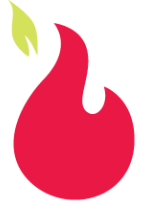
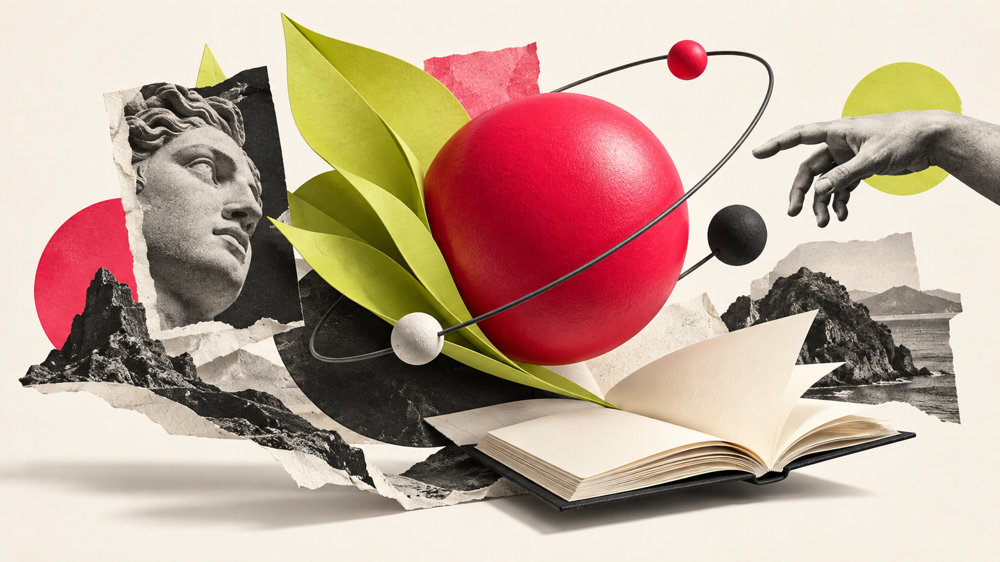

Assinatura completa
Sem girar, inclinar, distorcer ou redesenhar a marca.
Flame / catálogo de referência · proposta v0.2
Foundations e composições para web, social e entregas multimodais. Este catálogo pertence ao repositório do DS. O site público apresenta a newsletter e convida à leitura e à assinatura.
Átomos / identidade
Sem girar, inclinar, distorcer ou redesenhar a marca.

Apenas a chama e sua folha, sem o texto abaixo. Enquadramento do asset original, sem geração ou redesenho.
Átomos e moléculas / linguagem visual

Imagem conceitual gerada com IA / OpenAI, sob direção de Kell Bonassoli. Estudo visual aprovado por Kell; não representa evidência factual.
Fluent UI System Icons · Microsoft · MIT. Ícones acompanham rótulos; não substituem a marca nem a evidência.
Estados de hover e foco; contraste; alvo de 48px; rótulo textual.
Átomos: cor, tipo, espaço, foco, marca, ícone e imagem. Moléculas: ação, metadado e linha de fonte. Organismos: hero, EvidenceStack, composição editorial e Research Desk. Templates: site de entrada, carrossel, stories e roteiro audiovisual.
Identidade: Cereja Flamejante / Kell Bonassoli. Referência de UI: Microsoft Fluent 2. Ícones: Microsoft Fluent UI System Icons, MIT. Arte: gerada com IA / OpenAI sob direção de Kell. Imagens conceituais nunca substituem fontes. Este catálogo não é o site público, nem uma migração de produção.
Organismos e templates / revista visual
Uma sequência de olhares.
Capa, detalhe, conexão, referência e convite. Textos demonstrativos, sem publicação editorial. Os diferentes enquadramentos abaixo pertencem à mesma arte conceitual: não são fontes independentes.
Cultura × tecnologia
Criar é conectar.
Um olhar mais perto
Repertório é matéria.
Detalhe de arte conceitual · IA / OpenAI
Uma conexão possível
Entre o que sabemos
e o que imaginamos.
Conexão demonstrativa · não é uma tese aprovada
Mesa de referências
Uma imagem.
Outra pergunta.
Nas peças reais, entram obra, autor, fonte e por que vale olhar.
Modelo visual · não apresenta uma referência factual
A conversa continua
O que isso
acende em você?
cerejaflamejante.substack.com
Matriz 4:5. A imagem conduz o ritmo; a tipografia orienta. Peças finais precisam de fontes, caption/alt, revisão humana e exportação.